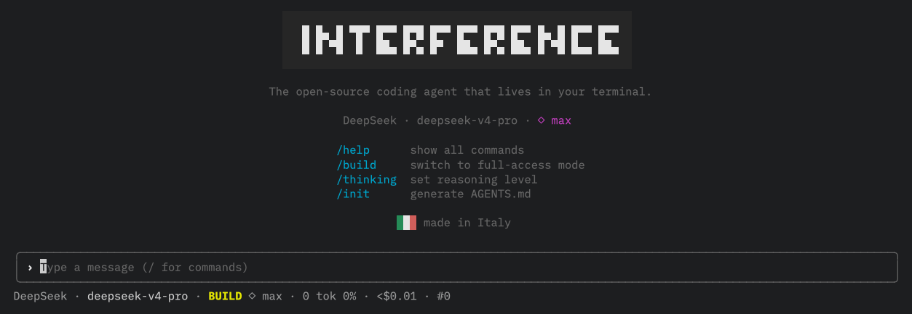

Native tool-calling
A typed tool registry over the Vercel AI SDK — multi-step, with tool errors fed back for self-correction.
interference reads your code, edits files and runs commands through an agentic loop — with explicit permissions and a read-only Plan mode. No editor lock-in. Just the terminal.

Describe a task in plain language. interference plans before it touches anything.
read · ls · glob · grep · webfetch to explore, write · edit · bash · task to act — multi-step, streamed live.
Every mutating action is gated by allow / ask / deny. Approve with a diff in front of you.
Sessions are persisted and snapshotted. Roll back a change the agent made, instantly.
The agent explores and reasons — never writes. Perfect for understanding a codebase or scoping a change before committing to it.
file:line evidenceThe agent writes files, applies atomic edits and runs commands — each behind your permission rules, with destructive actions denied by default.
edit (unique-match)bashA typed tool registry over the Vercel AI SDK — multi-step, with tool errors fed back for self-correction.
allow / ask / deny rules enforced in code, not in the prompt. The model can't talk its way past them.
Streaming output, spinners and live tool steps in a flicker-free terminal interface built with Ink.
Resume where you left off. Snapshots before every mutation mean undo/redo on the agent's edits.
See exactly what you’re spending on API calls — live, per-request, in your terminal. No hidden usage, no surprise bills.
Runtime, test runner, and package manager — one toolchain, zero config. Starts instantly.
Domain-specific agent skills (AWS, Rust, SwiftUI, NestJS, Docker, ...) auto-detected by keyword matching or invoked explicitly via /skill-name.
Delegate complex multi-step tasks to isolated agents. Explore (read-only) and General (full) types, with permission inheritance.
/help · /clear · /undo · /redo · /init · /model · /plan · /build · /compact · /sessions · /rename. Fuzzy autocomplete on /.
Built in Italy. Open-source, MIT licensed, not VC-funded. Your code never leaves your machine unless you explicitly send it to an API. An independent, GDPR-native alternative to Silicon Valley agents.
Every tool call, every reasoning step, and exactly what you’re spending on API costs — live, in your terminal. No hidden usage. No surprise bills.
bun install -g interference-agent
Then run interference. Add keys with /provider on first launch.